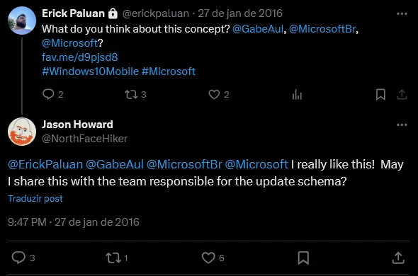
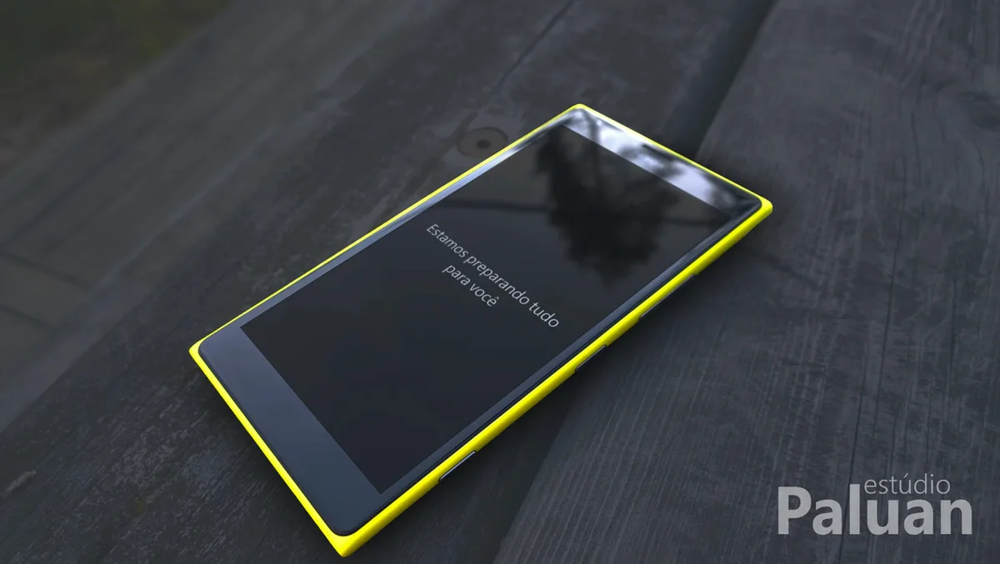
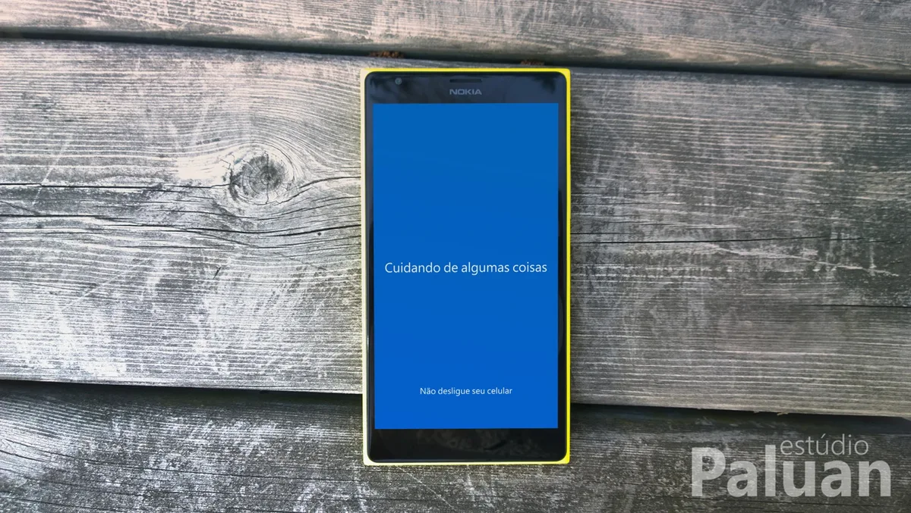

Cuidando de algumas coisas
Em janeiro de 2016, o Windows 10 Mobile estava chegando aos Lumias. Quem já tinha passado por uma atualização de sistema no celular conhecia a cena: o aparelho reinicia, a tela fica parada e o sistema te dá um aviso seco, quase burocrático. No desktop, o Windows 10 já tinha uma experiência de atualização mais cuidadosa. No mobile, parecia outro sistema.
Isso me incomodava. Atualizar o sistema é um ato de confiança: você entrega o celular e espera, sem poder fazer nada, que ele volte inteiro. A tela que acompanha esse momento deveria reconhecer isso.
Eu era (e sou) apaixonado pelo Windows Phone, tinha um Lumia amarelo à mão e uma ideia fixa: unificar a experiência do Windows 10 entre desktop e mobile. Em vez de esperar uma correção, decidi propor uma.
O conceito #
O redesign tem três momentos.
Primeiro, o tom. A tela azul traz uma frase simples: “Cuidando de algumas coisas”, e um aviso discreto: “Não desligue seu celular”. Linguagem humana, que acalma em vez de intimidar.
Depois, a mudança de foco. Em outra tela, “Estamos preparando tudo para você”. O sistema deixa de “processar” e passa a “preparar algo para alguém”. Parece detalhe, mas muda a sensação de espera.
Por fim, a informação. Um anel de progresso com o percentual em destaque e as etapas listadas abaixo (Copiando arquivos, Instalando recursos, Definindo configurações). É o que mais falta durante uma atualização: saber em que ponto está e quanto ainda falta.
A noite de 27 de janeiro #
Publiquei o conceito no DeviantArt e, às 21h33 daquele dia, postei no Twitter marcando o Gabe Aul (na época à frente do programa Windows Insider), a Microsoft Brasil e a Microsoft, com uma pergunta simples: “What do you think about this concept?”
Catorze minutos depois, Jason Howard, da Microsoft, respondeu que gostou e perguntou se podia compartilhar o conceito com a equipe responsável pelo esquema de atualização. Respondi que seria uma honra.

Não sei o que aconteceu depois disso. Não tenho como afirmar que o conceito foi visto pela equipe, muito menos que influenciou algo. Mas o fato de um funcionário da Microsoft ter olhado para um trabalho feito por um designer do interior de São Paulo e ter respondido em minutos já foi suficiente para mudar a minha percepção do que um portfólio pode fazer.


O que ficou #
- Portfólio vale mais que currículo. Ninguém me perguntou de onde eu era ou qual era meu diploma. Importou ter olhado para um problema real e proposto uma solução.
- Alcance certo vale mais que alcance grande. Os números do tweet foram modestos. Mas a pessoa certa viu.
- Os momentos “invisíveis” de um produto mostram o respeito dele pelo usuário. Espera, erro, transição: é aí que o design realmente se revela. O Windows 10 Mobile acabou saindo de cena. Esse tweet continua fixado no meu perfil.